Я слышал столько хорошего об Animal Crossing, но у меня никогда не было GameCube. Когда игру выпустили на Nintendo DS, она получила кучу положительных отзывов, и я решил дать ей шанс несмотря на то, что она выглядит так, словно делалась для детей с синдромом дауна и дефицитом внимания.
Я еще не был готов к тому дерьму, что будет происходить в детской игре. Весь отчёт перед вами.
Я задокументировал похождения Билли — весёлого мальчугана, верящего, что отправляется в летний лагерь за невероятными приключениями.
Следующие изображения не подвергались никаким изменениям (за исключением изменения масштаба или пометок, указывающих на то, какой именно вариант диалога выбран).
Глава 1: Добро пожаловать в лагерь
Ранее я не слышал об этом лагере. Он был довольно дешевым, а мы на тот момент были на мели. Лагерь подогнал нам личного бомбилу. Я закинул чемодан в багажник, и мы умчались так быстро, что даже не успел попрощаться со своей мамой. Как в любом дешевом ужастике, лило как из ведра. Да и с самим шофером было что-то не так, словно у него беда с железами.

Говор его был невнятен, мне не понравилось, как он саркастично произнес «Лагерь». Вроде ехали мы довольно долго, однако полностью его лица я так и не разглядел, лишь кусками. Катались будто вечность, и я решил вздремнуть под аккомпанемент капелек дождя. Вскоре пришлось проснуться, потому что он попытался со мной поговорить. В шутливой манере он меня спрашивает за оплату, словно мы еще не заплатили за лагерь. В этот момент я уже должен был насторожиться.
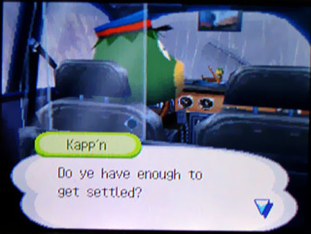
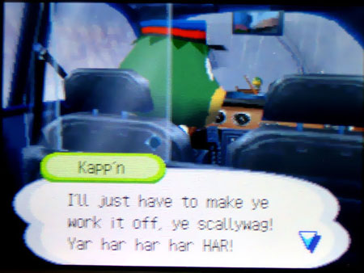

Только начинаем тормозить, как он берет и вышвыривает меня из машины, забрав с собой мой багаж. Вот же сукин сын. Всё, что у меня осталось – одежда и стрижка, блядь, хуже некуда.
Единственное, что я мог делать – заселяться. Дама за стойкой – это ебанный пеликан, который называет себя Пелли. Это какой-то прикол или что это за тематический маскарад, где взрослые одеваются как животные?
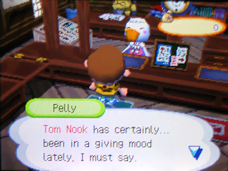
Она говорит мне, что Том Нук сейчас особенно заинтересован в обустройстве моего захолустья. Я его еще даже в глаза не видел, но имя врезалось мне в память навсегда. В ее голосе слышится, как она заучивала эту фразу, проговаривая ее много раз.
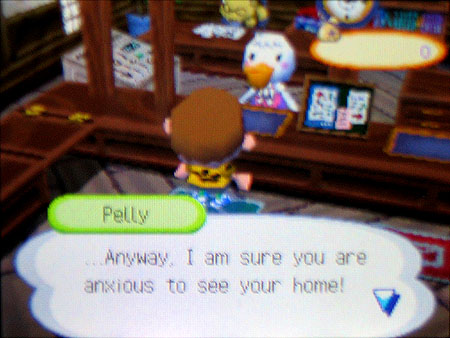
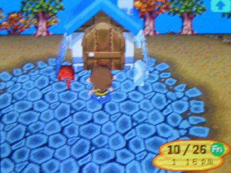
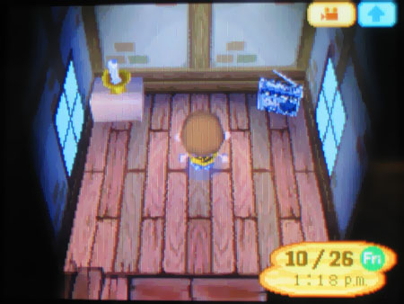
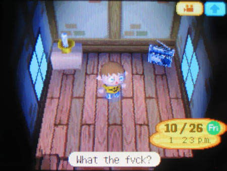
Какого ХУЯ здесь происходит? Ни туалета, ни раковины, ни даже сраного стула. Есть лишь коробка, свеча без спичек и радио, что проигрывало одну лишь песню. Кто куда – а я в администрацию.
Стоило выйти за порог, так тут же появляется этот Том Нук, смесь дряхлого продавана, адвоката и немецкой овчарки, одетая как енот в гребанный фартук горничной.
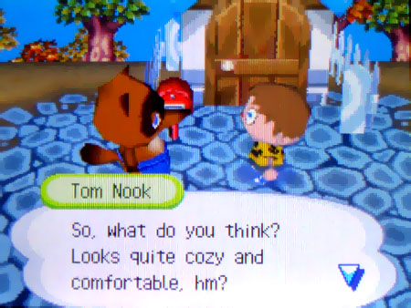
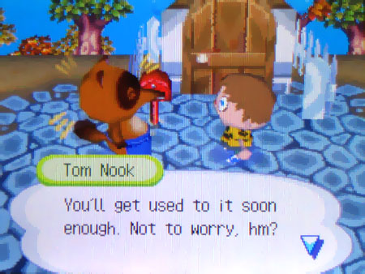
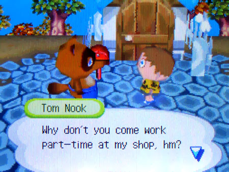
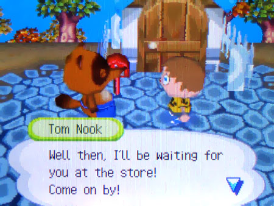
Не успел я рта раскрыть, как он уже заявляет, что я купил этот кусок дерьма под видом дома, что должен ему кучу денег и что мне лучше бы их вернуть, а поскольку денег у меня нет, он с радостью позволит мне работать в его маленьком потогоночном чудо-магазе, так что он ожидает моего визита в ближайшее время. И тут же сваливает.
Я брожу в оцепенении, пытаясь сориентироваться. Лагерь не большой, но здесь нет ни дорожек, ни тропинок — просто безликая куча грязи с парой деревьев. Я прохожу мимо убогой лавки одежды, прежде чем замечаю нечто, сбежавшее из трущоб, с табличкой, нацарапанной от руки: «Лавка Нука».
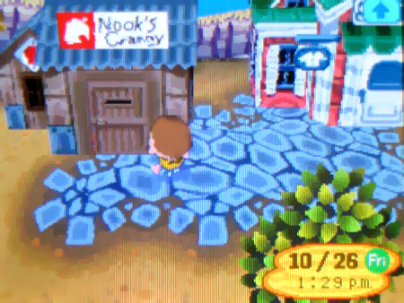
В мою голову пришла гениальная (на первый взгляд) идея – сказать Тому Нуку всё, как есть; Я не покупал эту халупу, я всего лишь восьмилетний пацан на каникулах. Я еще так никогда не ошибался.
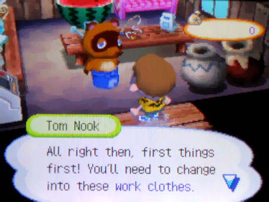
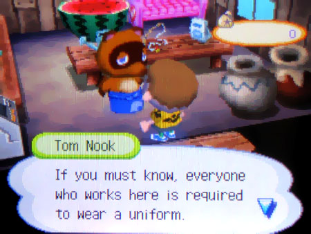
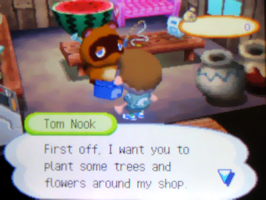
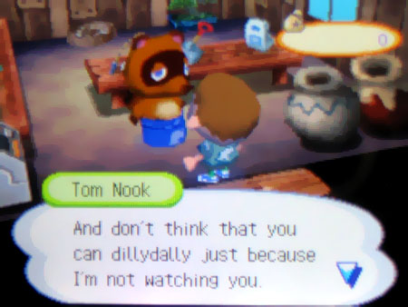
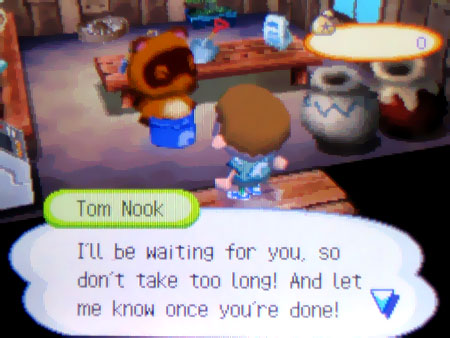
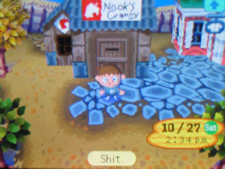
Этот сукин сын решил сразу по-крупному играть, и через несколько секунд я уже надеваю рабочую форму и таскаю огромные мешки с удобрениями к выходу.
Только когда я начинаю сажать третье деревце, меня накрывает паника. Здесь что-то явно не так. Почему тут нет никого кроме меня? Почему Нук сказал: «Каждый, кто здесь работает, должен надеть униформу», — хотя здесь явно нет других людей? Он говорил в прошедшем времени? Если я теперь работаю на Тома, почему я не подписывал никаких бумаг? И почему в этом огороженном лагере есть только одна старая в хламину хижина, которая не является домом для вожатого, разодетого как какой-то ёбаный фурри?!
У меня желудок узлом завязывается, когда я бегу через пустынную площадку к массивной укреплённой сторожке, вырезанной в сплошной скале. Два здоровенных пса-солдата сверлят меня взглядами, и я ругаюсь сквозь зубы, что не могу найти ни одного нормального человека, но в этот момент я уже близок к истерике.
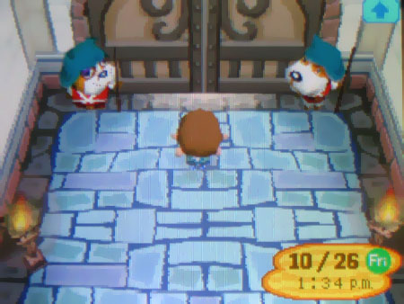
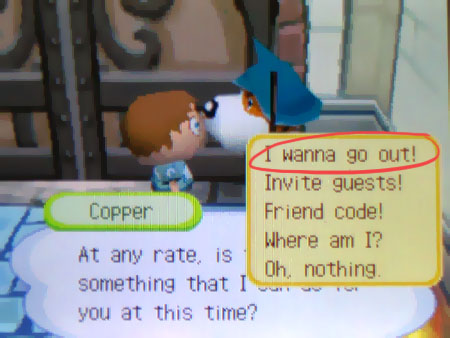
Я умолял того пса открыть врата, но он лишь смотрел своими глазами прямо мне в душу и дрожь прошлась по спине. А когда он всё же ответил – последнее, что прозвучало от него это моё имя.
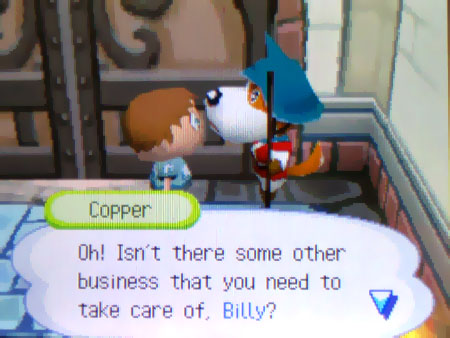
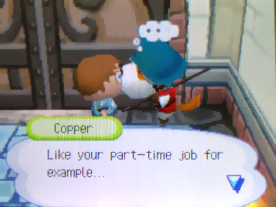
Откуда-то этот мудила знает моё имя, если только… ёбанный рот! До моего восьмилетнего мозга внезапно дошло.
Они все в сговоре.
Тот странный бомбила, стыривший весь мой хабар, принуждение носить рабочую одежду, не пойми откуда взявшийся долг, охраняемые ворота… это всё один большой заговор Я оказался один в этой ужасной ловушке.